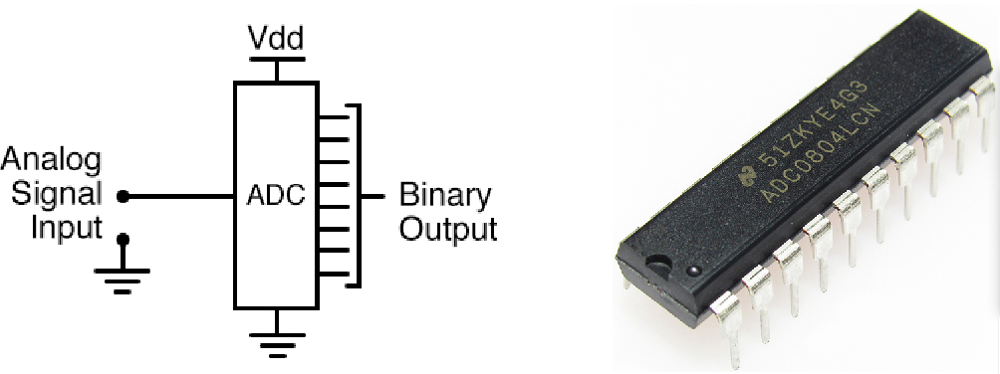
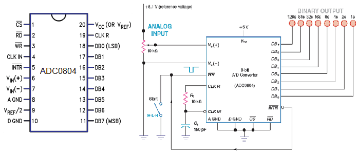
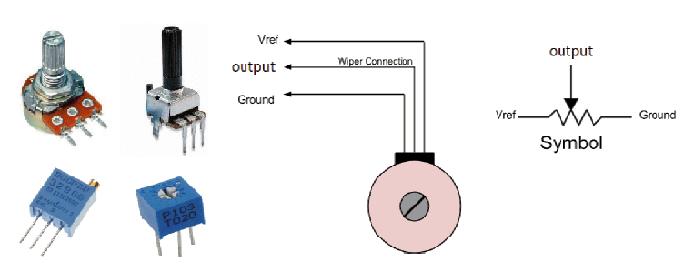
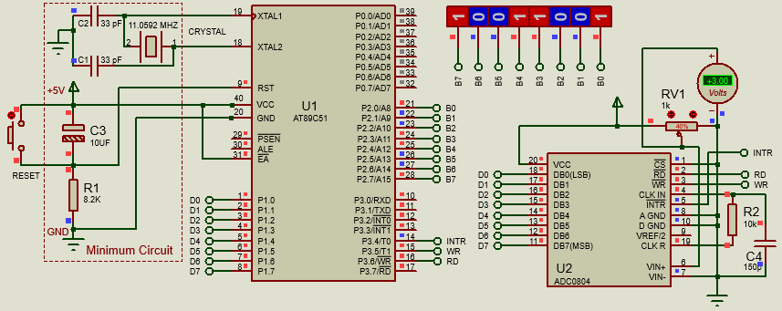
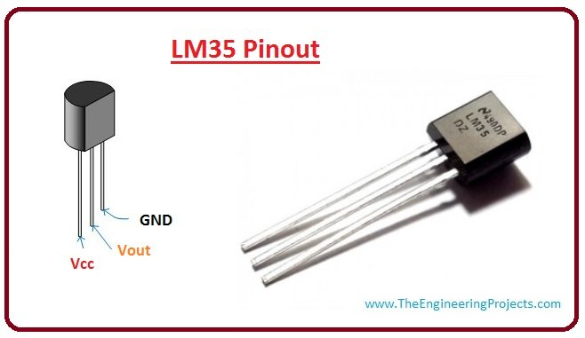

Introduction:
We live in an analog world, surrounded by digital devices. Everything we see, feel or
measure is analog in nature such as light, temperature, speed, pressure etc. But most
of the electronic devices around us starting from a simple digital watch to a super
computer are all digital devices. So, we often need to measure and process signals
that vary; these are called analog signals.
So, it is obvious that we need something that could convert these analog
parameters to digital value for a microcontroller or micro-processor to understand
it. This something is called the ADC or analog to digital converter.
These ADC circuits can be found as
an individual ADC ICs by themselves or embedded into a microcontrollers. As 8051
microcontrollers do not have their internal adc, we will use an external adc IC
to do the same. In this article we will learn how to read analog signals using
8051 microcontroller.
Hardware Discussion : ADC IC AD0804

Fig: Analog to Digital Conversion and AD0804 ADC Chip
FEATURES OF ADC 0804 :
- 8 bit resolution
- Differential analogue voltage inputs
- 0-5V input voltage range (No zero adjustment).
- Built-in clock generator
- Voltage at Vref/2 (pin9) can be externally adjusted
- convert smaller input voltage spans to full 8 bit resolution.
- This module is available in twenty pinouts PDIP (dual inline packaging) and SOIC (small outline integrated circuits) packaging.
- This module can easily connect with other microcontroller and can also work alone in any circuitry.
PIN DESCRIPTION: AD0803/AD0804/MCPXX

Fig: AD0804 pin out and circuit diagram
- PIN-1 – CS (chip select) It is an active low pin and is used to activate ADC0804.
This a a feature of energy saving. In our example we will connect this pin to ground.
- PIN-2 – RD (Read) It is an input pin and is active low. ADC stores the result in
an internal register after conversion of analog data. This pin helps to get the data out of the ADC0804.
When CS=0, high to low pulse is given to RD pin, then digital output comes on the pins D0-D7.
- PIN-3 – WR (Write) It is an input pin and is active low which is used to initiate
the ADC to start the conversion process. When CS=0, WR makes a low to high transition, then ADC starts
the conversion process.
- PIN-4 – Clock In (CLK IN) Connect external clock to this pin.
- PIN-5 – INTR (Interrupt) This pin automatically goes low when conversion is done by
ADC0804 or when digital equivalent of analog input is ready.
- PIN-6 – Vin + connect input analog sensor pin/input voltage to this pin.
- PIN-7 – Vin - ground this pin.
- PIN-8 – AGND (Analog Ground) ground this pin.
- PIN-9 – Vref/2 set the reference voltage for analog input (Very important pin discussed below)
- PIN-10 – DGND (Digital Ground) ground this pin
- PIN-11 to PIN-18 – Data out*put pins.
- PIN-19 – CLK R (Clock R) Used with clock IN pin when internal clock source is used.
- PIN-20 – Vcc +5 volts
PIN DESCRIPTION: AD0803/AD0804/MCPXX
- CS (chip select) low(0) to activate the adc0804.
- WR (write) pin low (0).
- WR (write) pin high (1) after some delay small delay. This low to high impulse at WR pin starts your conversion.
- Now check the INTR(interrupt) pin if it is high(1) conversion is running if it is low(0) the conversion is over.
- RD =low(0) and after some time high(1). This will bring the converted value to the 8 data output pins of ADC 0804.
Variable Resistor :
We’ve worked with regular resistors before, and variable resistors do pretty much the
same thing. The only difference here is we can change the resistance value of variable
resistors. There’s many different ways they can operate - from dials to sliders and all
sorts of in-between. They’re used as sensors, adjustors, and trigger mechanisms.
For us, we’ll be using a dial based variable resistor called a potentiometer to act as
an adjustment knob for an LED.

Fig: Variable Resistor and Potentiometer
Variable Resistor :
Potentiometer : The trimmer potentiometer, also known as a trimpot,
is essentially two variable resistors (R1 and R2) connected in series. The total
resistance of the two variable resistors (R1 + R2) will always be the same as the
value of the trimpot, in our case 10K. However, we can turn the knob on the trimpot
to decrease the resistance of one resistor and at the same time increase the resistance
of the other resistor. If we turn the knob to either end, one resistor will be 0R
will the other one will be 10K.
Potentiometers have a range of resistance. They can be attuned from zero
ohms to whatever maximum resistance that is specific to it. For example, a potentiometer
of 10 k can be adjusted from 0 ohm to its maximum of 10 k.
Circuit Diagram :

Fig: ADC 0804 with AT89S51
Circuit Discussion :
Port 1 is used as input port and port 0 is used as output port. Potentiometer is used
to adjust the voltage. If the analogue input voltage is 5V then all LEDs will glow
indicating 11111111 in binary which is the equivalent of 255 in decimal. If the voltage
is zero, no LED will glow.
When full voltage given:(Output =11111111)
Code Discussion:
Post Run Discussion: LED Chaser (Code Optimization)
LM35 is an analog, linear temperature sensor whose output voltage varies
linearly with change in temperature. LM35 is three terminal linear temperature sensor from
National semiconductors. It can measure temperature from \textbf{-55 degree celsius to +150
degree celsius.} The voltage output of the LM35 increases 10mV per degree Celsius rise
in temperature. LM35 can be operated from a 5V supply and the stand by current is less
than 60uA. The pin out of LM35 is shown in the figure below.

Fig: LM35 Pin out
So that’s all info you need about LM35 for this particular temperature display project
using a microcontroller. So lets get to LM35 temperature sensor interfacing with our 8051.
Circuit Diagram :
Fig: LM35 Circuit
|